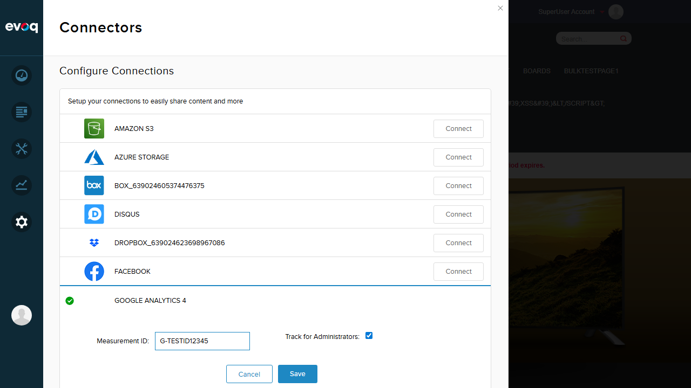
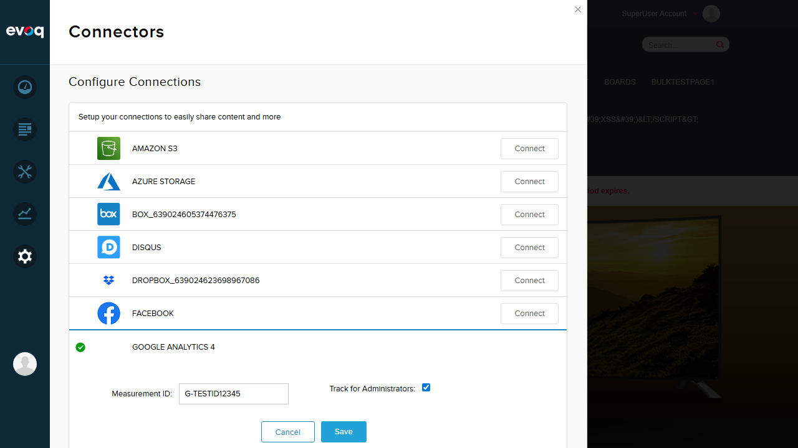
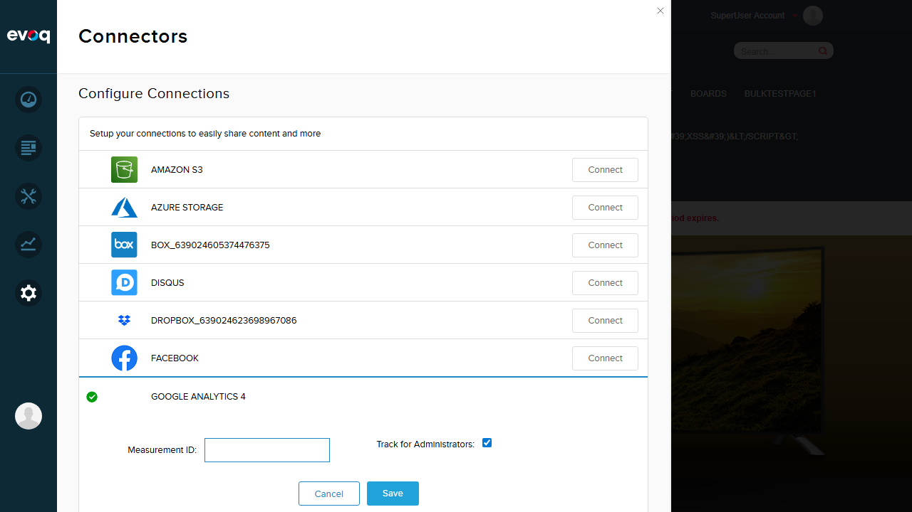
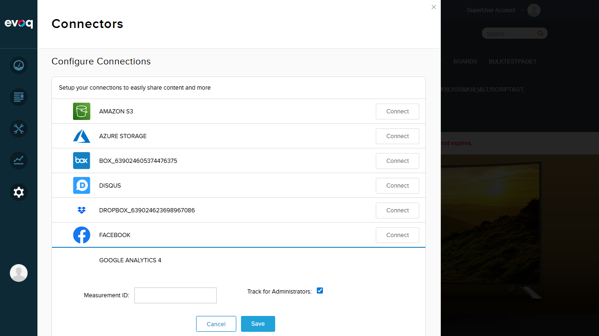
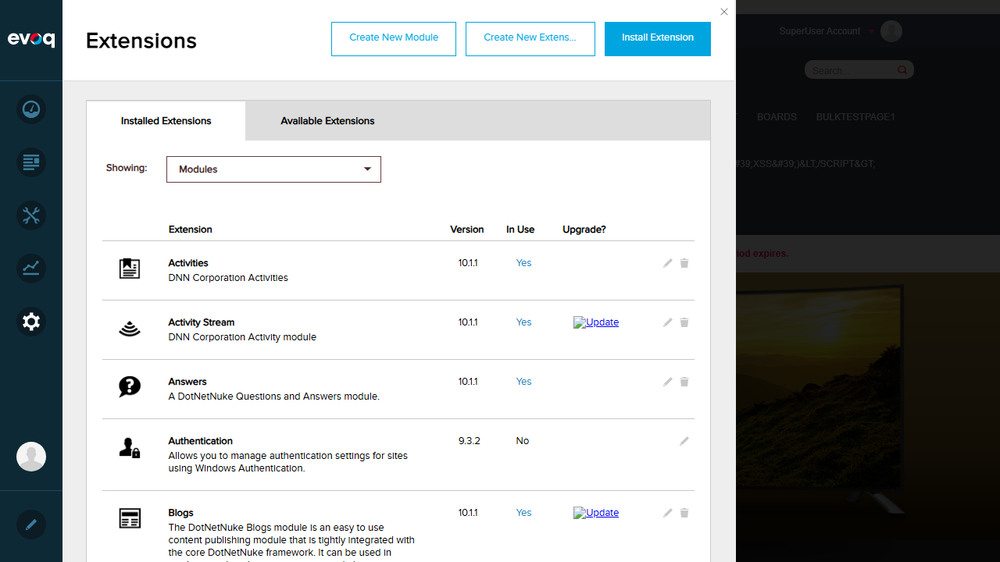
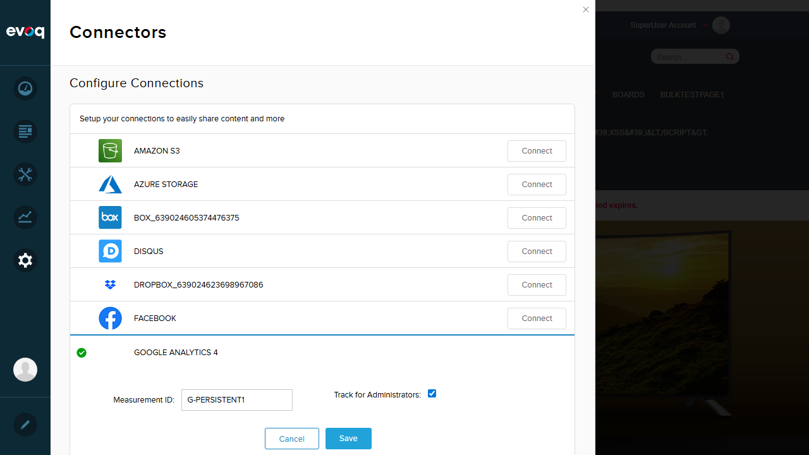

Test Report: Google Analytics 4 (GA4) Support
Feature Summary
Extension: Evoq.Content.GoogleAnalyticsConnector
Feature: Google Analytics 4 (GA4) Support
Priority: Top
Test Date: 2026-01-06
Description: Provides support for Google Analytics 4 with updated tracking code and configuration
UI Location: Persona Bar > Settings > Connectors > Google Analytics > GA4 Configuration
Test Results Summary
| Test Case |
Status |
| Test 1: GA4 Configuration Panel Access |
PASS |
| Test 2: GA4 gtag.js Script Injection |
PASS |
| Test 3: GA4 Tracking Code Format |
PASS |
| Test 4: Modify Measurement ID |
PASS |
| Test 5: Empty Input Validation |
PASS |
| Test 6: Special Characters / XSS Input Validation |
FAIL |
| Test 7: Track for Administrators Toggle |
PASS |
Detailed Test Results
Test 1: GA4 Configuration Panel Access
Status: PASS
Objective: Verify that the GA4 configuration panel can be accessed and displays the correct fields.
Steps Taken:
- Logged in as host user
- Navigated to Persona Bar > Settings > Connectors
- Located Google Analytics 4 connector
- Clicked "Edit" button to open configuration panel
Result: The GA4 configuration panel opened successfully, displaying the Measurement ID field with value "G-PERSISTENT1" and "Track for Administrators" checkbox.

Test 2: GA4 gtag.js Script Injection
Status: PASS
Objective: Verify that the GA4 gtag.js script is properly injected into the page.
Steps Taken:
- Used browser developer tools to inspect page source
- Searched for gtag.js script elements
- Verified the script source URL contains the correct measurement ID
Result: Found gtag.js script injection with correct measurement ID:
<script src="https://www.googletagmanager.com/gtag/js?id=G-PERSISTENT1" async=""></script>
This confirms proper GA4 script injection.
Test 3: GA4 Tracking Code Format
Status: PASS
Objective: Verify that the GA4 tracking code uses the correct gtag format.
Steps Taken:
- Inspected inline scripts on the page
- Located the gtag configuration code
- Verified the correct GA4 config format
Result: Found correct GA4 tracking code format:
window.dataLayer = window.dataLayer || [];
function gtag(){dataLayer.push(arguments);}
gtag('js', new Date());
gtag('config', 'G-PERSISTENT1');
This is the standard GA4 gtag.js implementation.
Test 4: Modify Measurement ID
Status: PASS
Objective: Verify that the measurement ID can be changed and saved successfully.
Steps Taken:
- Opened GA4 configuration panel
- Changed measurement ID from "G-PERSISTENT1" to "G-TESTID12345"
- Clicked Save button
- Verified success message appeared
Result: The measurement ID was successfully modified and saved. Success message "Item successfully saved." was displayed.


Test 5: Empty Input Validation
Status: PASS
Objective: Verify that empty measurement ID is rejected with appropriate error message.
Steps Taken:
- Opened GA4 configuration panel
- Cleared the measurement ID field completely
- Clicked Save button
- Observed validation error message
Result: The system correctly rejected empty input and displayed the validation error: "Tracking Code Cannot Be Empty"


Test 6: Special Characters / XSS Input Validation
Status: FAIL
Objective: Verify that special characters and potentially malicious input is rejected.
Steps Taken:
- Opened GA4 configuration panel
- Entered XSS payload:
<script>alert('XSS')</script>
- Clicked Save button
- Observed the result
Result: SECURITY ISSUE FOUND - The system accepted the malicious input without validation. This caused the GA tracking script to break, displaying "');" on the page and causing JavaScript console errors.
Security Issue: The measurement ID field does not validate input format. It accepts any characters including HTML/JavaScript, which can break page functionality. While this is not a stored XSS vulnerability (the script tags are not executed), it demonstrates a lack of input validation that could lead to:
- Broken analytics tracking
- Page rendering issues
- Potential for other injection attacks
Recommendation: Implement regex validation to ensure measurement IDs match the GA4 format (G-XXXXXXXXXX).


Test 7: Track for Administrators Toggle
Status: PASS
Objective: Verify that the "Track for Administrators" toggle functions correctly.
Steps Taken:
- Opened GA4 configuration panel
- Observed "Track for Administrators" checkbox
- Verified checkbox state can be toggled
- Saved configuration with checkbox enabled
Result: The "Track for Administrators" checkbox is present and functional. Setting was saved successfully.

Observations
Code Analysis Notes
- Data Stream Support: Code in authorize.js shows DataStreamModel with measurementId property, indicating full GA4 Data Stream support. However, the simplified configuration UI only shows the measurement ID field directly (likely the connector is already authorized).
- Account/Property/Stream Cascade: The authroize.htm template contains dropdowns for Account, Web Property, and Data Stream selection, which would be shown during initial Google account authorization flow.
- Migration from Universal Analytics: The connector appears to fully support GA4. The code structure suggests this is a dedicated GA4 implementation rather than a migration layer, which is the recommended approach since Universal Analytics has been deprecated.
Security Recommendation
The measurement ID field should implement format validation to ensure only valid GA4 measurement IDs (format: G-XXXXXXXXXX) are accepted. This would prevent:
- Accidental misconfiguration
- Script injection that breaks page functionality
- Potential security vulnerabilities
Suggested regex pattern: ^G-[A-Z0-9]{10}$
Test Environment
| Property | Value |
|---|
| Website URL | http://localhost:8081 |
| User Account | host (Superuser) |
| Browser Viewport | 1280x720 |
| Testing Tool | Playwright MCP |
Conclusion
The Google Analytics 4 (GA4) Support feature is largely functional with 6 out of 7 tests passing. The core functionality works correctly:
- GA4 configuration panel is accessible and displays correct fields
- gtag.js script injection works properly with correct measurement ID
- Tracking code format follows GA4 standards
- Measurement ID can be modified and saved
- Empty input validation works correctly
- Track for Administrators toggle is functional
Issue Found: Input validation for measurement ID format is missing, allowing special characters that can break the tracking script. This should be addressed in a future update.